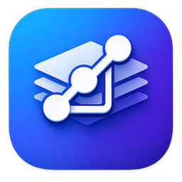
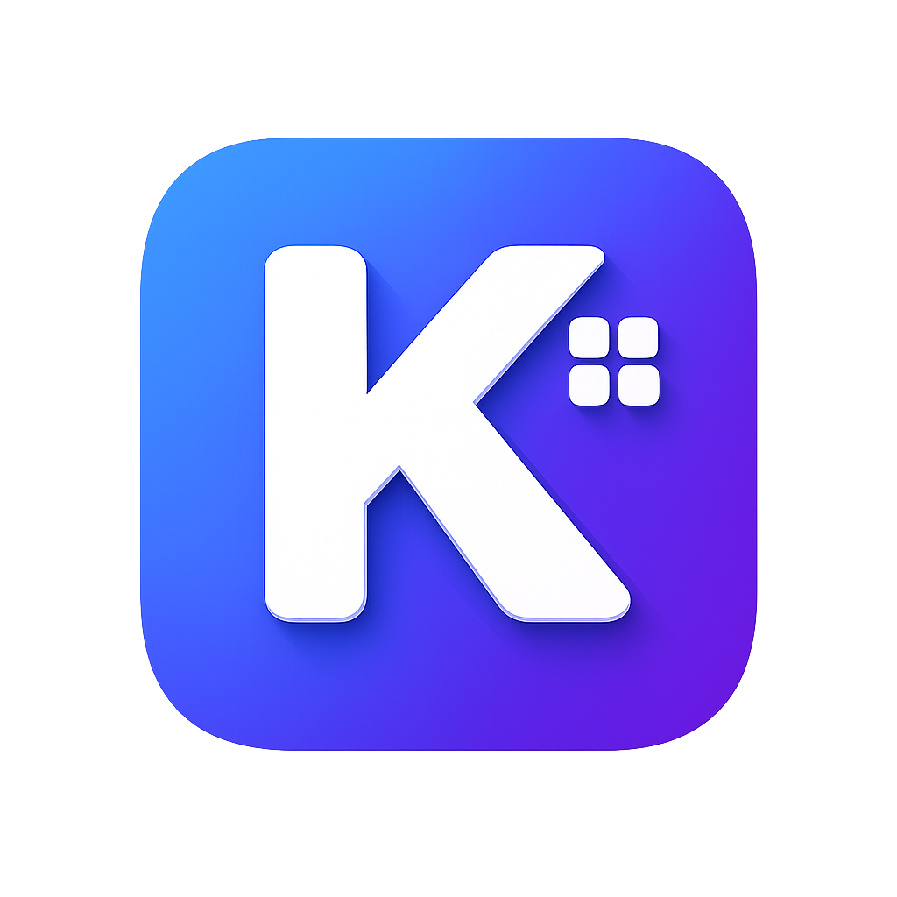
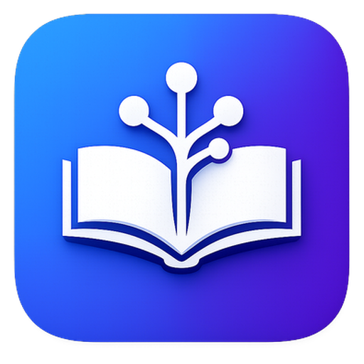
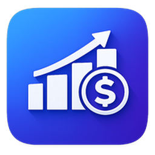
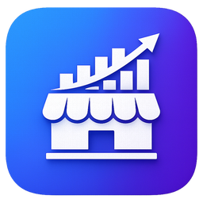

Git Dlog
Dev tools
Grátis
Status de HEAD e branches de vários repositórios git.

kvojpsResolvo problemas de negócio com software — da concepção à implantação de soluções escaláveis e confiáveis.
Sobre
Engenheiro de Software há 4 anos na Fitec, onde atuo na concepção, desenvolvimento e implantação de soluções para diferentes domínios de negócio, incluindo gestão de conteúdo técnico, comércio eletrônico, gestão de testes em hardware e processamento de dados para indústria. Graduado em Engenharia de Software e mestre em Engenharia da Computação, ambos pela Universidade de Pernambuco (UPE).
Apps
Apps que desenvolvi e disponibilizo gratuitamente para ajudar em fluxos do dia a dia e de micro empreendimentos.

Status de HEAD e branches de vários repositórios git.

Organize aprendizados em árvores de tópicos.

Controle financeiro pessoal.

Gestão de produtos, pedidos e vendas.
Contato
Aberto a oportunidades como freelancer ou CLT em desenvolvimento backend e cloud.

App desktop que varre recursivamente os diretórios que você cadastrar, localiza múltiplos repositórios git e mostra, para cada um, o commit HEAD e as branches agrupadas por commit, mais recente primeiro — útil para acompanhar vários projetos de uma vez sem entrar em cada pasta.

App desktop para organizar aprendizados em árvores de tópicos, com status, anotações e um grafo arrastável estilo mapa mental. Uso individual e local, sem autenticação e sem servidor.

Aplicativo desktop para controle de finanças pessoais. Organize contas a pagar e a receber, gerencie lançamentos recorrentes, anexe comprovantes, acompanhe gráficos e tenha uma visão clara do seu patrimônio e gastos. Todos os dados ficam armazenados apenas no seu computador.

App desktop para acompanhar o catálogo de produtos, controlar estoque e gerenciar pedidos do início ao fim, com uma visão geral de receita e lucro. Tudo salvo localmente, sem depender de internet.